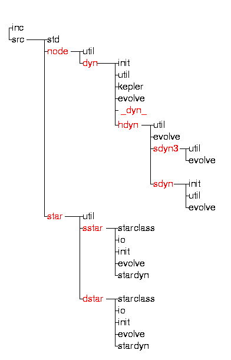

To some extent, Starlab's directory hierarchy (illustrated below) mirrors the package's internal class structure. The highlighted entries in the diagram also describe the essentials of the data structure within the package. 
All header files are contained in the inc directory; all source files are contained in src.
The std directory contains material common to all parts of Starlab -- vector arithmetic, random numbers, the "story" mechanism, and so on.
Programs relating to the dynamical classes (node, dyn, hdyn, etc.), and the stellar classes (star, single_star, and double_star) are contained in the directories of the same names (except that the last two are abbreviated to sstar and dstar). The content of the various classes is discussed further below.
The init directories contain code relating to the creation of individual instances or systems.
The util directories contain code relating to the manipulation and/or analysis of N-body systems.
The kepler directory contains all code relating to the computation of two-body Keplerian motion.
The evolve directories contain code relating to time evolution of individual stars or N-body systems.
The starclass directories contain material relating to the different star and binary types defined within Starlab.
The io directories contain code relating to input and
output of stellar and binary data.
The stardyn directories are interfaces between the
stellar evolution and stellar dynamical branches of Starlab
(sstar/stardyn is associated with dyn,
dstar/stardyn with hdyn).
Particles in Starlab are represented as nodes with a general tree structure implemented as a multiply linked list. The node class defines logical (as opposed to physical) relationships between nodes. A node is defined as follows (see Starlab header file inc/node.h for details; only part of the data structure is shown here):
class node {
static node* root; // Global address of the root node.
long int node_flag; // Indicator of valid node (for internal
// bookkeeping purposes only)
int index; // Nodes can be numbered,
char * name; // or they can receive individual names.
real mass;
node * oldest_daughter; // Define the node's place in
node * elder_sister; // the tree.
node * younger_sister;
story * log_story; // Log story is a generalized scratchpad.
story * dyn_story; // The dyn story is a placeholder for
// dynamical information not recognized by
// a program -- this allows the information
// to be preserved and passed down a pipe.
hydrobase * hbase; // hydrobase is the class underlying all
// classes that handle hydrodynamics.
starbase * sbase; // starbase is the class underlying all
// classes that handle stellar evolution.
}
Starlab places no restrictions are
on the tree structure; however, application programs such as
kira maintain a simple binary tree (0 or 2 daughters) below
the top level:
Parent pointers are drawn in blue, oldest daughter pointers in green, elder sisters in brown, younger sisters in purple.
The story mechanism is described
in the internals section.
The dyn class is derived from the node class. Additional data (see Starlab header file inc/dyn.h for a complete description) are:
class dyn : public node {
static real system_time;
static bool use_sstar; // Single star evolution if true.
vector pos; // Position (3-D Cartesian vector).
vector vel; // Velocity: (d/dt) pos.
vector acc; // Acceleration: (d/dt) vel.
kepler * kep; // Pointer to a kepler orbit object.
}
Note that mass is a property of a node, while time, pos, vel, and acc
are properties of dyns. Most utilities that create or analyze N-body
systems are written to work with dyn structures. (A
vector is a 3-dimensional real array; real is a
synonym for double.) The connection between dyn and hdyn is provided by an intermediate _dyn_ class, which is also the base class for sdyn3 and sdyn. The hdyn class is derived from the _dyn_ class. The most important additional data (see Starlab header files inc/_dyn_.h and inc/hdyn.h for full details) are:
class _dyn_ : public dyn {
real time; // Individual particle time
real timestep; // and time step.
real pot; // Potential.
vector jerk; // (d/dt) acc
vector pred_pos; // Predicted variables for use in the
vector pred_vel; // standard predictor-corrector scheme.
real t_pred; // Time of prediction.
real radius; // Effective (or actual) radius.
}
Note that individual time steps and radii, and algorithm-specific
variables are introduced at this stage.
class hdyn : public _dyn_ {
//-----------------------------------------------------------------
// Global variables:
// Tidal field:
static int tidal_type; // none, point-mass, halo, disk
static real alpha1; // tidal field is conventionally taken
static real alpha3; // to be (-alpha1*x, 0, -alpha3*z)
static real omega; // system angular speed
// Binary evolution:
static bool use_dstar; // binary evolution if true
// Stellar encounters and mergers:
static real stellar_encounter_criterion_sq;
static real stellar_merger_criterion_sq;
static real stellar_capture_criterion_sq;
// Run-time integration parameters:
static real eta; // time step parameter
static real eps; // softening length
static real d_min_sq; // scale term governing tree adjustment
static real lag_factor; // squared hysteresis factor
static real mbar; // mass scale
static real gamma2; // squared threshhold for unperturbed motoin
static real gamma23; // gamma^{-2/3}
static real initial_step_limit; // limit on first time step
static real step_limit; // limit on all time steps
// Escaper removal:
static real scaled_stripping_radius; // stripping radius for unit mass
//-----------------------------------------------------------------
// Variables for unperturbed motion:
real perturbation_squared; // Relative perturbation squared.
real unperturbed_timestep; // Time step for unpert. motion.
bool fully_unperturbed; // True if orbit is fully
// unperturbed.
// Perturber information:
int n_perturbers; // Number of perturbers.
hdyn** perturber_list; // Pointer to perturber array.
bool valid_perturbers; // True if any particle is
// within the perturbation
// radius and the perturber
// list has not overflowed.
// Other neighbor information:
hdyn* nn; // Pointer to nearest neighbor.
real d_nn_sq; // Distance squared to nn.
hdyn* coll; // Pointer to neighbor whose
// surface is closest to this node.
real d_coll_sq; // Distance squared to coll.
// HARP-3 variables:
int harp3_index; // HARP-3 address of this particle.
real harp3_rnb_sq; // HARP-3 neighbor sphere radius.
}
Numerous kira run-time integration parameters are included as
global (static) data in this class.
The starbase class (see inc/starbase.h) serves as a "connector" between the dynamics and the stellar evolution programs. (The hydrobase class, not discussed here but defined for future use,provides similar functionality for hydrodynamical applications.) Its main purpose is to trick C++ into letting us include a pointer to a "star" object in the node class without the necessity of loading all the stellar evolution libraries when they are not needed! The structure is deliberately simple:
class starbase {
node * the_node; // pointer to associated node
story * star_story; // pointer to star story
static real m_conv_star_to_dyn; // mass conversion factor
static real r_conv_star_to_dyn; // length conversion factor
static real t_conv_star_to_dyn; // time conversion factor
static bool use_hdyn; // true iff binary evolution
// is enabled
}
Note that this is not a derived class -- it serves as the
base class for non-dynamical stellar evolution calculations.
The star class (see inc/star/star.h) is derived from starbase. It contains no data and is the formal base class for all stellar and binary evolution classes. It is distinct from starbase to avoid the linking problems mentioned earlier, allowing the dynamical and stellar evolutionary halves of the package to function (and be exported) independently if desired. It serves as a convenient placeholder for a number of utility member functions and virtual functions used by the derived single_star and double_star classes:
class star : public starbase {
// No private or protected data...
public:
.
.
.
}
The single_star class (see inc/star/single_star.h for a complete listing) contains the essential data defining the evolutionary state of a star in our description of stellar evolution. The more important member data are:
class single_star : public star {
int identity;
stellar_type star_type; // main sequence,
// red giant, etc.
star_type_spec spec_type[no_of_spec_type]; // spectral type
real current_time;
real relative_age;
real last_update_age;
real next_update_age;
real relative_mass;
real envelope_mass;
real core_mass;
real radius;
real core_radius;
real effective_radius;
real luminosity;
}
The stages through which a star evolves are represented by classes
derived from single_star, e.g.
class main_sequence : public single_star {
real main_sequence_core_mass();
real main_sequence_core_radius();
void adjust_donor_age(const real mdot);
}
class horizontal_branch : public single_star {
// No private or protected data...
public :
.
.
.
}
class white_dwarf : public single_star {
// No private or protected data...
public :
.
.
.
}
and so on.The double_star class (see inc/star/double_star.h for a complete listing) contains essential data defining the evolutionary state of a binary system. The more important member data are:
class double_star : public star {
real semi;
real eccentricity;
binary_type bin_type;
int identity;
real binary_age;
real minimal_timestep;
int donor_identity;
stellar_type donor_type;
real donor_timescale;
mass_transfer_type current_mass_transfer_type;
}
Just as single_star objects are associated with "leaf"
particles in the dynamical tree, double_star objects are
associated with parent (center-or-mass) nodes of binary
systems.The scattering classes sdyn3 and sdyn are used, respectively, in the 3-body and general N-body scattering packages. Like hdyn, they are derived from _dyn_. Unlike hdyn, the scattering software has no stellar evolution interface.
sdyn3 (see inc/sdyn3.h) is defined as follows:
class sdyn3 : public _dyn_ {
sdyn3 * nn; // pointer to nearest neighbor
real d_nn_sq; // distance squared to nearest neighbor
int nn_label; // identity of current nearest neighbor
real energy_dissipation; // dissipation associated with this
// star due to its merger history
}
Mergers are handled in a rudimentary fashion, with a simple "effective
radius" criterion. Individual time steps are not used, but time
reversibility is enforced by means of a symmetrization technique
described by Hut et al. (ApJL, xxx, xxx).
The sdyn class (inc/sdyn.h) is essentially similar, although it differs in detail due to algorithmic and practical differences between the two packages.